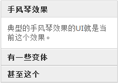
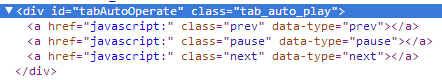

表示位移动画(translate)（如果有）的方向。
horizontal 默认参数。表示水平方向的运动。vertical 表示垂直方向的位移。暂无
暂无
表示事件类型。
click 默认参数。表示点击事件。hover或mouseover 表示鼠标经过事件。暂无
暂无
一般用在选项卡切换效果上。用来表示选项卡处于激活状态的类名。
字符串。默认为空字符串。可缺省。
如果选项卡默认含有与classAdd匹配的类名，当插件会认为此选项卡默认处理展开（或激活）状态。
假设4个选项卡，默认状态的类名是.default, 选中状态的类名是.default .active. 则classAdd的值就是active.
一般用在选项卡切换效果上。表示选项卡处于非激活状态时，被移除的默认类名。
字符串。默认为空字符串。可缺省。
只有在类名的默认态和选中态是A↔B关系的时候，此参数才会使用。具体可参见下面的示例。
假设4个选项卡，默认状态的类名是.default, 选中状态的类名是.active. 则classRemove的值就是default; 另外classAdd的值依旧是active.
表示一些匿名类名API的前缀名称。
字符串。默认为空字符串。可缺省。
classPrefix为空字符串，则插件生成（可参考container参数）的类名就是"prev"与"next". 如果classPrefix值为"example"，则生成的“前进”与“后退”按钮的类名是"example_prev"和"example_next".classPrev, classNext...)设置了非undefined值，则这里的参数无效。也就是说，匿名类名参数权重大于这里的classPrefix。跑马灯效果，如果不是无限切换，则其前进和后退按钮是有一个禁用状态的。默认类名是disabled. 如果classPrefix值为example, 则按钮禁用的类名就是example_disabled.
powerSwitch插件采用的是HTML属性关联机制。将切换的面板或列表通过按钮上某个属性关联在一起。attribute表示的就是这个关联属性。
字符串。默认为"data-rel".
如果属性值比较简单，纯字母，例如data-rel="example"，则：
example作为id选择器获取对应的切换元素 - $("#example").example作为class类名选择器获取对应的切换元素 - $(".example").example作为标签选择器获取对应的切换元素 - $("example").如果属性值比较复杂，例如data-rel="#example a"，则：
#example a直接作为选择器使用。attribute对应的自定义属性，或者属性值为空字符串，则插件会使用元素的href属性#后面的值作为关联选择器，规则与上面一致。例如元素href="#example", 则首先会去获取$("#example")这个元素。正如本API文档页面左侧的切换实现所示。之所以保留这个特性，是因为本身锚点技术就能够实现一些选项卡切换，且还有记忆功能（如本API文档页面随时刷新），是面向高级CSS技术的一种JS增强处理。<a href="javascript:" id="switchPrev" data-refer="switchList">前进</a>
<ul>
<li class="switchList">切换列表1</li>
<li class="switchList">切换列表1</li>
</ul>
$("#switchPrev").powerSwitch({
attribute: "data-refer"
});
表示切换的动画类型
auto 默认参数。表示自动。例如跑马灯效果为切换动画（scroll驱动或translate驱动），选项卡效果为直接的现实与隐藏。none 表示无动画效果。用在重置跑马灯默认效果适合使用。与下面的display作用类似。display 表示display属性驱动的显示与隐藏。visibility 表示visibility属性驱动的显示与隐藏。translate 表示动画形式的位移效果。fade 表示淡入淡出切换效果。slide 表示上下slide动画效果。一般用在手风琴切换效果上。可参见测试页面的下截图所示的效果：在某些情况下，一些动画类型的设置是会被忽略的。但这些忽略都是按照正常逻辑走的，因此，可以不必在意。
暂无
表示容器元素。
容器元素。需要是jQuery包装器元素对象。原生的DOM对象可能会有问题。
该属性只在两种情况下使用：
powerFloat方法绑定在“前进”、“后退”按钮上），且是位移动画效果，需要使用container参数表示切换的列表元素的容器。您可以指向列表元素们的直接父元素上，则使用CSS3 transform偏移实现效果；如果指向父级元素的再父级元素（高宽限制的那个元素），则使用该元素的scroll滚动实现动画效果（注：该效果性能不佳，会导致duration时间不准，不建议使用）。container参数，插件会在container后面创建“前进”、“后退”、“暂停”|“播放”这三个按钮，默认不显示，需CSS设置，生成的类名遵循匿名类名API以及classPrefix的双重作用。

暂无
表示自动播放的时间
数值。默认值是0. 表示不自动定时播放。 如果是其他数值，如果条件允许，就会自动播放。
autoTime有些情况下是无效的，例如，不能循环切换的跑马灯效果，这个应该好理解的，还有“更多”展开与收起效果等。
暂无
表示每次切换的数目
auto 默认参数。表示自动。之所以这么设计是因为：选项卡、跑马灯等表示每次切换1个，但是，更多展开与收起效果默认是全部。具有不确定性。暂无
暂无
表示
horizontal 默认参数。表示vertical 表示暂无
暂无
表示
horizontal 默认参数。表示vertical 表示暂无
暂无
表示
horizontal 默认参数。表示vertical 表示暂无
暂无
表示
horizontal 默认参数。表示vertical 表示暂无
暂无
表示
horizontal 默认参数。表示vertical 表示暂无
暂无
表示
horizontal 默认参数。表示vertical 表示暂无
暂无
表示
horizontal 默认参数。表示vertical 表示暂无
暂无
表示
horizontal 默认参数。表示vertical 表示暂无
暂无